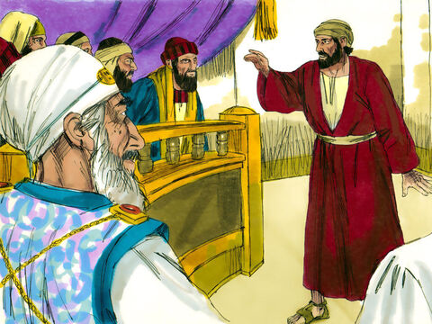
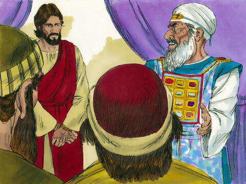
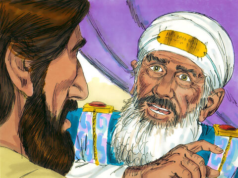
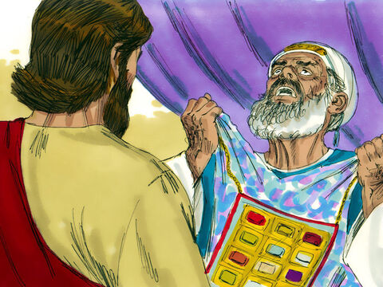

Lord Jesus Before Caiaphas And The Council
And they that had laid hold on Jesus led him away to Caiaphas the high priest, where the scribes and the elders were assembled.
But Peter followed him afar off unto the high priest's palace, and went in, and sat with the servants, to see the end.
Now the chief priests, and elders, and all the council, sought false witness against Jesus, to put him to death;
But found none: yea, though many false witnesses came, yet found they none. At the last came two false witnesses,
And said, This fellow said, I am able to destroy the temple of God, and to build it in three days.
And the high priest arose, and said unto him, Answerest thou nothing? what is it which these witness against thee?
But Jesus held his peace, And the high priest answered and said unto him, I adjure thee by the living God, that thou tell us whether thou be the Christ, the Son of God.
Jesus saith unto him, Thou hast said: nevertheless I say unto you, Hereafter shall ye see the Son of man sitting on the right hand of power, and coming in the clouds of heaven.
Then the high priest rent his clothes, saying, He hath spoken blasphemy; what further need have we of witnesses? behold, now ye have heard his blasphemy.
What think ye? They answered and said, He is guilty of death.
Then did they spit in his face, and buffeted him; and others smote him with the palms of their hands,
Saying, Prophesy unto us, thou Christ, Who is he that smote thee?
Matthew 26:57-68
- 
- 
- 
- 